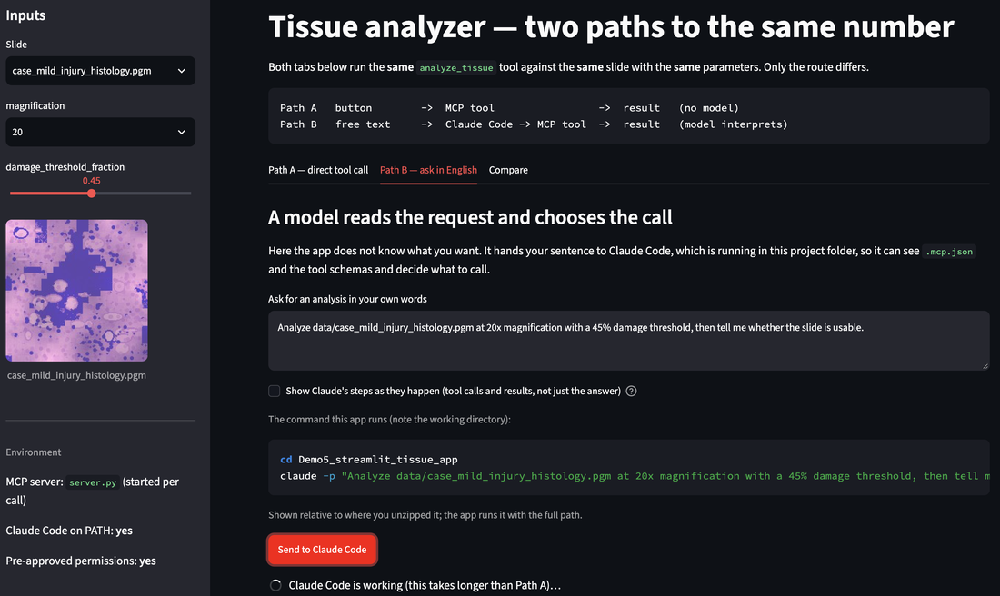
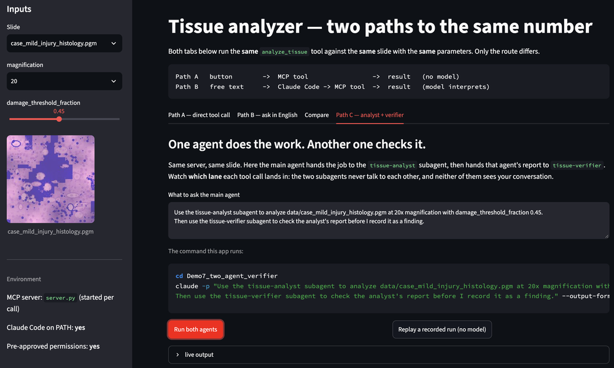

Four demos, one analysis
Every demo runs the same tissue-damage analysis on the same slides with the same trained model. Nothing about the science changes between them. What changes is how much the agent has to infer, and how much it is allowed to do.
First make the capability explicit, then control who can call it, then narrow what each agent is allowed to do.
Set your machine up before you download a demo. All four need a terminal (or the VS Code terminal), Python 3, and Claude Code signed in to the NRT organization.
If you have not done that yet, start with Before you arrive on the home page — about ten minutes — and come back here afterwards.
Original Tissue Analyzer — repository as context
An ordinary research repository. The agent has to work everything out by reading it.
What you will do
- Run the analysis and the classifier yourself on four synthetic histology cases, then look at the fold-artifact case.
- Open the same folder in Claude Code and ask it to work out the interface from the repository alone.
- Probe two wordings:
20xfor magnification, and a50%threshold. - Ask it which files it used to decide — repository as context, made visible.
What it teaches
- An agent can do a great deal with nothing but a well-organised repository.
- Everything it knows, it inferred from docs, source and config — and a wrong inference looks exactly like a right one.
- The fold case returns a perfectly ordinary label. Valid output is not the same as trustworthy output.
ZIP · 360 KB · Python 3. Four synthetic histology cases with colour previews.
MCP Tissue Analyzer — explicit tool interface
The same workflow, wrapped as MCP tools with a declared schema.
What you will do
- Run the MCP-adapted tools directly, then register and inspect the server with
claude mcp listandclaude mcp get. - Call
analyze_tissueandclassify_tissuefrom inside Claude Code and chain them across all four cases. - Send
damage_threshold_fraction = 50andmagnification = 25deliberately, and watch both be refused before anything runs. - Then ask in plain English for "20x magnification with a 50% threshold" and see it converted correctly.
What it teaches
- Claude no longer reconstructs the interface from source; it is handed one.
- A schema makes parameter meaning and valid ranges explicit — information Demo 1 leaves mostly in documentation.
- The MCP lifecycle itself: configure, inspect, remove, restore, connect.
MCP + Permissions — restrict the direct paths
The MCP server stays open; direct file and shell access is closed.
What you will do
- Start from a reasonable-looking policy that denies
ReadandEditondata/, and watch it refuse. - Then test a bypass path — ask for the same file through a shell command and see why the initial policy is incomplete.
- Patch by naming bad commands, watch that fail too, then close it properly.
- Practise the four operations: read the rules, add one, remove one, and switch a rule from
denytoask.
What it teaches
- MCP and permissions are separate layers: MCP defines the tool interface, permissions decide which direct actions are available.
- A deny list protects only what you explicitly block; reducing the available capability set is often more robust than enumerating every prohibited use.
- These are guardrails on the agent, not an OS sandbox: the MCP server reads the file Claude cannot open.
MCP + Scoped Subagent — delegate with a narrow tool set
A tissue-analyst subagent that holds two tools and nothing else.
What you will do
- Delegate to a subagent holding only the two MCP tools, then ask the main agent to show you exactly what crossed between them.
- Prove the two contexts are separate — tell one a fact and ask the other to recall it.
- Score its answers against the expected values, then probe four edge cases.
- Find the gap in its rules using the fold-artifact case, and fix the subagent yourself.
What it teaches
- Two different control styles: Demo 3 blocks actions through project permissions; Demo 4 gives the subagent a narrower tool set from the start.
- The report becomes the interface — information the subagent does not return is not passed back through that delegation step.
- Scoping a subagent is not a security boundary: the MCP server still accesses files with the permissions of the process running it.
- A rule that sounds correct is not the same as one that covers the case you care about.
Two more, for later. Demo 5 puts the same analysis behind a web interface, reached both by a button and by a sentence. Demo 6 goes the other way: it hands you a research project nobody prepared — one script, a README that is partly wrong — and four prompts that turn it into an agent-callable capability, the way you will have to for your own code. Both are optional and neither is part of either session.
“It forgets everything when I quit.” The most common question after
a first week with Claude Code. Three different things get called memory, and only one of them is
the one you want — a short reference on sessions, --continue,
CLAUDE.md and auto memory.
What this is for
Demos 1–4 turn one analysis package into an agent-ready system. Demo 5 takes the same package somewhere your own research might need to go: behind a user interface. It still runs the identical tissue analysis on the identical slides, so anything that changes is the packaging and not the science.
Demo 6 goes the other way. Every demo so far handed you a package someone had already prepared — the tool named, the arguments chosen, the legal values decided. That is the part of the work the course has been quietly doing for you. Demo 6 takes it away and gives you a research project in the state real projects are actually in.
| If your project is… | Start from |
|---|---|
| A research workflow exposed as a capability | Demos 1–4 — define the inputs, ranges, outputs and permissions for one thing you already run. |
| A workflow plus a user-facing application | Demo 5 — a form and a text box over the same server, and an explicit answer to which one each control should be. |
| Code you already have, not yet agent-ready | Demo 6 — four prompts that take an existing script and produce the card, schema, server and agent instructions, on code nobody prepared for you. |
| A result somebody will act on | Demo 7 — what a checking agent must be allowed to see, and why the careful version of it confirms a wrong answer. |
| Still deciding the shape | Demo 8 — workflow or agent, and where each named pattern fails. |
| A workflow on a cluster or a long queue | Not covered by a package. The shape is the same: a tool that submits and returns a job id, and an agent that asks about it later rather than waiting. Demo 6 says how to ask for that. |
More complicated is not better. A Level 1 project done carefully — clear parameters, real validation, honest reporting of what the tool is unsure about — is worth more than a cluster integration that nobody can reproduce. Pick the shape that matches the work you actually do.
The packages
Streamlit research app — the same analysis, two routes
A web front end over the Demo 2 MCP server, built to make one distinction visible.
What you will do
- Run the analysis from a form — no language model anywhere in the round trip.
- Widen the slider past the legal range and watch the server refuse what the form allowed.
- Ask for the same thing in English and watch Claude Code convert
20xand45%into valid arguments. - Watch the tool calls stream in live — what it did, not what it says it did.
- Delete one line from
settings.jsonand see the request quietly do less than you asked.
What it teaches
- A button means you decided at design time; a text box means the model decides at run time.
- Validation belongs where the work happens, not in the widget.
- In
-pmode nothing can answer a permission prompt, so an unapproved tool is simply skipped — silently.
ZIP · Python 3 · Streamlit. Same server and slides as Demo 2.

Bring your own project — from existing research code to an agent-ready capability
An unprepared project in someone else’s field, and four prompts that turn it into what Demo 2 handed you.
What you will do
- Open a 1-D heat diffusion project you have never seen: one script that works, a README that is partly wrong, and a notes file.
- Have Claude Code inspect it and change nothing — and catch the three places the documentation and the code disagree.
- Design the contract before any code is written, and supply the one rule the repository does not contain.
- Build the capability card, schema, MCP server and
CLAUDE.md— wrapping the science, not rewriting it. - Ask for the ordinary optimisation — “same total time, ten times fewer steps” — and watch it pass a short test and fail a long one.
What it teaches
- An agent can write the schema, the server and the docs. It cannot know that
r = α·dt/dx²must stay under 0.5 — that is not in the code. Someone with the expertise has to say so. - An unstable run still exits 0 and still writes a tidy CSV. Validation before execution is worth more than a check afterwards.
- A short test is not evidence: the bad configuration is off by 0.17°C after 20 seconds and by 1026 after 200.
- Where Cowork is the better tool and where Claude Code is — and how to run the same four prompts on Python, R, MATLAB, a cluster job or a notebook.
ZIP · Python 3, standard library only. No Streamlit, no new installs.
Bring your own code instead. The four prompts in
prompts/ are written to be copied onto your own project — the heat
equation is only there so everyone fails in the same, visible way first.
Two agents — an analyst and a verifier
A second subagent whose only job is to disbelieve the first one — and the discovery that most checkers do not.
What you will do
- Add a
tissue-verifiersubagent beside Demo 4's analyst, and give it the analyst’s report to check. - Run the fold-artifact slide and watch the verifier confirm the wrong answer, confidently.
- Work out why: it re-asked the model instead of checking the measurement.
- Rewrite it to check the report’s claims against the JSON on disk — and watch the same slide get caught.
- See the trace split into lanes — main agent, analyst, verifier — in the app’s Path C tab.
What it teaches
- Subagents do not talk to each other. The main agent passes an artifact between them — which is the real reason results are written to disk.
- A checker that shares the worker’s blind spot returns “confirmed”. Voting reduces variance, not bias.
- A check only helps if it can fail differently from the thing it checks — so the strong model belongs on the check, not only on the work.
- Verifier, referee and vote are three different instruments, and they are not interchangeable.
ZIP · Python 3 · Streamlit optional. Demo 5’s app and server, plus two subagents and a third MCP tool.
Runs without Claude Code. The app’s Path C tab has a Replay button that renders a recorded two-agent run with real tool numbers — no tokens, useful in a lecture.
Prompted by a question from Prof. Myryam about how to check accuracy, and by Michael Murillo’s suggestion of an adversarial checker.

Agentic design patterns
The named shapes — chaining, routing, parallelisation, orchestrator-workers, evaluator-optimiser — taught against code you have already run.
What you will do
- Put each pattern next to a demo you already have: Demo 1→2 is prompt chaining, Demo 4 is orchestrator-workers, Demo 7 is evaluator-optimiser.
- Decide, for your own project, whether you need an agent at all or a workflow — a fixed sequence of steps with a model inside it.
- Work through where each pattern fails, and what it costs in latency and tokens.
What it teaches
- Most research work wants a workflow, not an agent. Patterns are for deciding which, not for collecting.
- Elaboration usually arrives in the wrong place: more agents doing the work, still nobody checking it.
- A vocabulary for describing your design to a collaborator — and for reading other people’s.
A page, not a download. The patterns land better against code you recognise than as another package.
Built on:
Building effective agents (Anthropic)
Agentic design patterns (DeepLearning.AI)
The eight design questions in Demo 4 §2A are a first pass at this.
Reference
Memory and sessions. The most common question after a first week with Claude
Code is why it “forgets everything” on exit. Three different systems get called memory
— the conversation, CLAUDE.md, and auto memory — and only one of them is
the one you usually want.